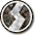

por favor haz clic en reporducir el audio, no se coloco automaticamente para evitar molestias al usuario, gracias por su comprensión
En el mundo de Yugioh el juego de cartas coleccionables hay varios tipos cartas dependiendo la jugabilidad y el tipo de juego de cada jugador, es necesario que los "duelistas" como se le denominan los jugadores de este juego no tengan el mismo tipo de carta puesto que es difìcil que el jugador tenga una buena partida y que lo lleve a la derrota.
Las Cartas de Monstruo (en japonés, モンスターカード Monsutākādo) representan a los monstruos que un jugador puede Invocar y hacer batallar contra otros o directamente contra su adversario durante la Battle Phase. Los monstruos son la base de cualquier Duelo. Las Cartas de Monstruo se diferencian por sus nombres, Atributo, Nivel (o Rango o Rating de Enlace), Tipo, ATK y DEF. Las Cartas de Monstruo pueden ser sub-divididas en Monstruos Normales, Monstruos de Efecto, Monstruos de Ritual, Monstruos de Fusión, Monstruos de Sincronía, Monstruos Xyz, Monstruos de Péndulo, Monstruos de Enlace y Monstruos Ficha, cada uno con un marco de color distintivo que los diferencia de otros.
Expandiendo las clasificaciones mencionadas arriba, los monstruos también pueden ser clasificados como monstruos Cantantes o Monstruos de Invocación Especial, pero esta clasificación no es una división aparte de las ya mencionadas arriba. Además, los Monstruos de Efecto en particular pueden también ser clasificados por sus habilidades. Esto incluye a los monstruos Spirit, monstruos Toon, monstruos de Unión, monstruos Géminis y monstruos de Volteo.
Los Monstruos Normales no tienen efectos, y no son comunmente emparejados con cualquier otro tipo de Carta de Monstruo (con la excepción de los monstruos Géminis, una clase de Monstruos de Efecto que se tratan como Monstruos Normales, y algunos Monstruos de Péndulo, que también pueden ser Monstruos Normales). Los Monstruos de Efecto no pueden también ser Monstruos Normales (con la excepción de los ya mencionados, monstruos Géminis), pero ellos sí pueden ser también Monstruos de Ritual, Fusión, Sincronía, Xyz, Péndulo y Enlace. Algunos Monstruos de Ritual, Fusión, Sincronía, Xyz y Enlace no tienen efectos, y en consecuencia, no son Monstruos de Efecto, pero tampoco se consideran Monstruos Normales. Dichos monstruos son conocidos como Monstruos que no son de Efecto.
Durante el Duelo, los monstruos pueden ser Invocados desde la mano en Posición de Ataque boca arriba o Colocados en Posición de Defensa boca abajo. (No puedes Invocar de Modo Normal un monstruo en Posición de Defensa boca arriba.) La importancia de estos monstruos radica en sus efectos (que generalmente, pueden activarse durante la Main Phase de su controlador) y los valores de sus ATK y DEF durante la Battle Phase (o más específico, durante el Damage Step).
Cuando en el texto de una carta aparece una palabra o frase entre comillas después de la palabra monstruo, significa un monstruo con esta palabra o frase en su nombre. Ej: un monstruo "HÉROE Elemental" se refiere a un monstruo con "HÉROE Elemental" en su nombre.
Las Cartas Mágicas (魔 法カード, Spell Cards en inglés, anteriormente conocidas como Magic Cards) son de color verde y pueden tener varios efectos que alteran un Duelo. Suelen tener efectos que benefician al controlador de la carta, o perjudican al adversario. Todas las Cartas Mágicas son de Velocidad de Hechizo 1, excepto las Cartas Mágicas de Juego Rápido, que son Velocidad de Hechizo 2. Puedes usar tantas Cartas Mágicas como quieras por turno.
Aunque las Cartas Mágicas no suelen ser tan poderosas como las de Trampa, tienen la ventaja de que se pueden usar en el mismo turno sin tener que Colocarlas antes. Una carta mágica colocada puede ser activada en el turno en el que es Colocada (a no ser que el efecto de otra carta diga lo contrario), pero no en el turno de tu adversario (excepto las Cartas Mágicas de Juego Rápido).

Las Cartas de Trampa son cartas de color púrpura que tienen varios efectos para hacerle difícil las cosas a tu adversario o más fáciles para ti durante un Duelo. Una Carta de Trampa debe ser Colocada en la Zona de Magia y Trampas y, generalmente, sólo puede ser activada después de que el turno actual haya terminado. Las excepciones a esta regla son los efectos de cartas que permiten activar Cartas de Trampa durante el turno en que fueron Colocadas (como el de "Templo de los Reyes" o el de "Trampa de Boogie") y los efectos de cartas que permiten activar Cartas de Trampa directamente de la mano (como los de "Makyura the Destructor" o "Jetroid"). Las Cartas de Trampa tienen Velocidad de Hechizo 2, con la excepción de las Cartas de Trampa de Contraefecto que tienen Velocidad de Hechizo 3. Las Cartas de Trampa pueden ser activadas durante el turno de tu adversario.

A continuación se presentara el tipo de carta o la categoria que pertenece a cada carta, estos tipos se pueden encontrar en cartas trampas y mágicas y no en mostruos, es conveniente saber que tipo de cartas son puesto que cada uno tiene su propio efecto a aplicar.
| Carta Mágica | Efecto | icono |
| Carta Continua | La carta continuas permanece en el campo boca arriba y sus efectos siguen funcionando hasta que la carta deje el campo |  |
| Carta de juego rápid/o | Estas cartas empiezan de primero y el oponente puede responder a ellas excepto que use carta de juego rápido para encadenar, se puede colocar en el campo boca abajo como si fuera una carta trampa. |  |
| Carta de equipo | Se equipa a un mostruo boca arriba, esta carta se destruye cuando el mostruo deje el campo o es destruida por una carta mágica o de trampa. |  |
| Cartas normales | Estas catas no tienen una función en especifíco. |

|
| Carta de campo | Esta carta se coloca en la zona de campo arriba del deck extra, estas cartas nos ayudan activar efectos para fortaleceer a nuestrous o evitar que sean destruidos va dependiendo el efecto de cada carta. |

|
| Carta de Ritual | Estas cartas nos ayudan a sacrificar cartas mostruos en mano o campo para invocar a un mostruo ritual de la mano al campo. |

|
reproduzca el video por favor haz clic en reproducir para ver el video, no se coloco reproducción automatico puesto para evitar molestias al usuario, gracias por su comprensión